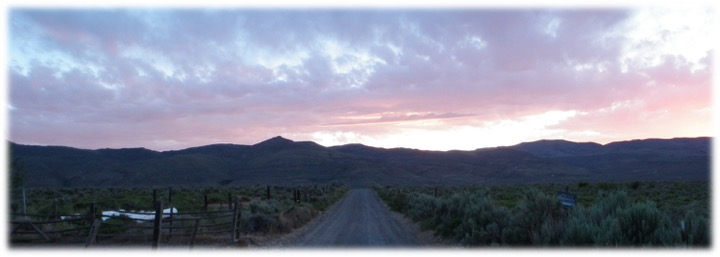

Streamflow Paradox
Most of the water resources in the western U.S. rely on winter snowpack. Water Resources in these regions are at particular risk with climate change due to less snow and more rain (Barnett et al., 2005, Berghuijs et al. 2014). In the Columbia River Basin, for example, 70-75% of streamflow comes from snow melt (Serreze et al., 1999). Furthermore, in the semi-arid West - states like Idaho, Oregon, and Nevada with the majority of the populations residing in large cities – the populations in the urban centers are rapidly growing and the majority of the area in the state has low population density (Lang et al., 2008). As populations throughout the western U.S. grow and human demand for water increases, more options are explored to increase water yield. Often schemes are devised to increase water delivery to these population centers by removing vegetation in the uplands.
One option that is often presented to increase water yield in semi-arid landscapes is the removal of pinyon and juniper trees. For much of the last century the justification pinyon and juniper removal has not been water yield, but forage improvement (Dalen and Snyder, 1987; Belsky, 1996), since grasses and forbs increase drastically with pinyon and juniper removal. However, justification for pinyon and juniper removal has shifted in the last several decades from forage improvement to augmentation of groundwater recharge, increased base flow, and increased overall streamflow (BLM, 1993, 1994). Indeed, there is extensive literature supporting that tree removal in forests increases water yield (Bosch and Hewlett, 1982; Stednick, 1996; Zhang et al., 2001, Huang et al., 2006; Zégre et al., 2010; Zou et al., 2014; Qiao et al., 2015). Indeed there is anecdotal evidence from ranchers and land managers that springs dried up when pinyon and juniper trees encroached into an area (Cockle, 2013) or where pinyon and juniper removal augmented streamflow (Kuhn et al., 2007). Due to both reduction in forage and perceived reduction in water yield, ranchers and land managers alike across the semi-arid west view pinyon and juniper as a “weed” and call for its removal (Elbert, 1994; Swan, 1994).
Despite that many toute that pinyon and juniper removal will augment water yield, these assertions are often based on studies in humid forests or anecdotal evidence. Many studies in pinyon and juniper watersheds reveal negligible increase in streamflow (Clary et al., 1974; Baker Jr, 1984; Dugas et al., 1998; Baker Jr and Ffolliott, 2000; Owens and Moore, 2007). In other cases woody plant expansion increased streamflow (Wilcox and Huang, 2010) and in another case woody plant die-off decreased streamflow (Guardiola-Claramonte et al., 2011). As a result of this scientific literature, many scientists question whether pinyon and juniper removal actually results in appreciable gain in most landscapes is highly contested (Huxman et al., 2005; Wilcox et al., 2006; Roundy and Vernon, 1999; Ffolliott and Gottfried, 2012).
Whether woody plant removal actually increases water yield depends on the physical traints of the plants (rooting depth, canoy size, etc.), climate (precipitation amount, seasonality, and intensities), soil type, and geomorphology (Thurow and Hester, 1997; Huxman et al., 2005; Wilcox et al., 2006). Many researchers assert that based on previous water yield studies, only sites with more than 450 mm (18 inches) of precipitation will result in increased water yield if pinyon and juniper are removed (Hibbert, 1983; Wilcox, 2002; Kuhn et al. 2007). Studies that call into question whether pinyon and juniper removal reduces streamflow cite empirical studies in the southwest and southern Great Basin (Belsky, 1996; Roundy and Vernon, 1999; Ffolliott and Gottfried, 2012), where a large portion of the precipitation occurs during summer monsoons. This means much of the precipitation that occurs during the summer will be lost to evaporation or transpiraiotn. Conversly, many pinyon and juniper reside in the norther Great Basin where precipitation predominantly occurs in the winter when evaporative demand is low. Two empirical studies are underway in the northern pinyon and juniper cover range, the South Mountain paired-catchment study in southwestern Idaho by the USDA-ARS in Boise, Idaho and the Porter Canyon Experimental Forest administered by the USDA-ARS in Reno, Nevada in winter-dominated precipitation regimes. These studies could clarify if and where increases in streamflow would occur with PJ removal.
On a final point about pinyon and juniper removal, while many ranchers and land managers consider these trees a “weed” and push for the removal, there are many stakeholders in the semi-arid west who hold these trees in high regard and view tree removal plans with skepticism. The Shoshone people of southern Idaho view Juniper trees as sacred (C. Davis, personal communication). Ranchers have seen pinyon and juniper removal in south eastern Oregon that included cutting down old growth (>150 years) pinyon and juniper trees (Cockle, 2013). While some people call for the removal of Juniper to improve forage and water yield, others hold pinyon and juniper with high esteem and regard these schemes with skepticism
